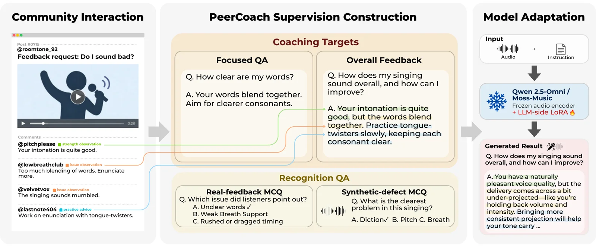
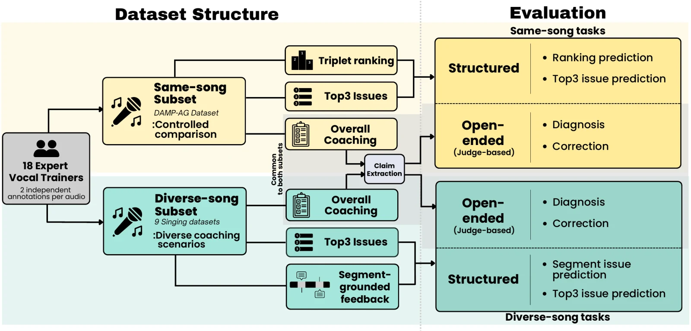
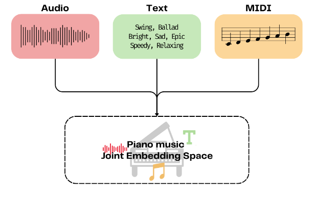
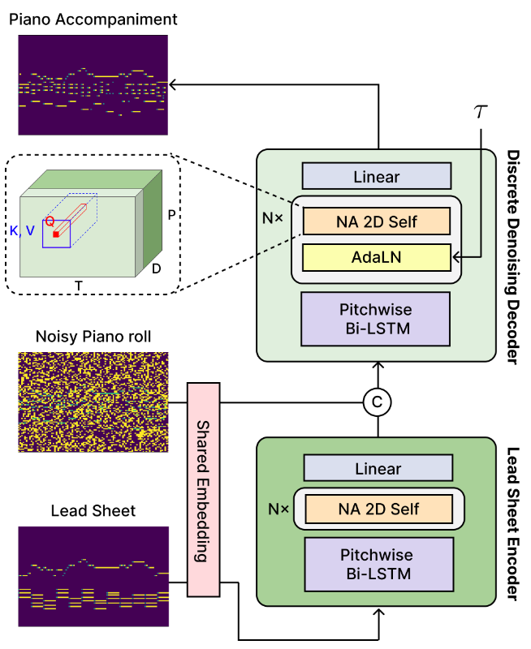
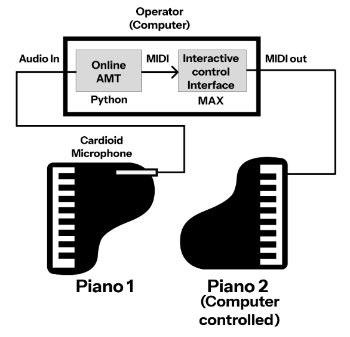
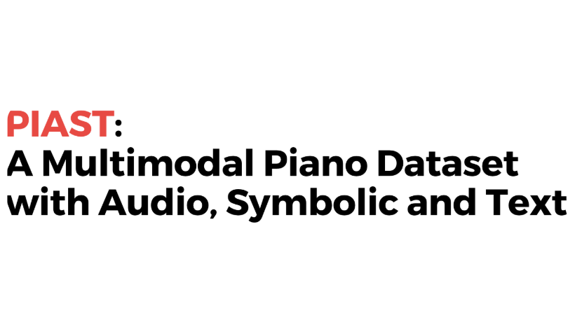

Hayeon Bang, Hounsu Kim, Joonyong Park, Jung-Jae Yu and Juhan Nam Under Review

Hayeon Bang, Hounsu Kim, Wonil Kim and Juhan Nam NeurIPS 2026 E&D

Hayeon Bang, Eunjin Choi, Seungheon Doh and Juhan Nam ISMIR 2025

Eunjin Choi, Hounsu Kim, Hayeon Bang, Taegyun Kwon and Juhan Nam ICASSP 2026

Hayeon Bang, Taegyun Kwon and Juhan Nam ICMC 2025

Hayeon Bang, Eunjin Choi, Megan Finch, Seungheon Doh, Seolhee Lee, Gyeong-hoon Lee and Juhan Nam NLP4MusA 2024